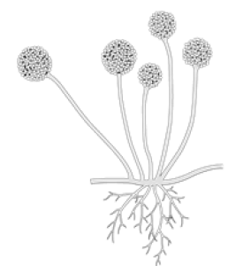

1번
다음은 털 곰팡이균을 이용한 첨단 생명 과학의 사례를 소개한 기사입니다. ㉠에 공통으로 들어갈 알맞은 말을 쓰세요.

㉠은/는 우리의 생활을 편리하게 해주는 물질입니다. 하지만 자연에서 잘 분해가 되지 않아 지구 생태계를 파괴하는 주요 물질이기도 합니다. 그런데 이러한 ㉠을/를 먹는 곤충이 발견되었습니다. 그 곤충의 배 속에
㉠을/를 분해하는 털 곰팡이균이 살기 때문에 가능한 일입니다. 과학자들은 이러한 털 곰팡이균을 이용해 ㉠을/를 분해하는 방법을 연구하고 있습니다.